Fundamentals of Electrical Networks
In this chapter
- 1.1 Electrical quantities and units
- 1.2 Voltage, current, power and energy
- 1.3 Passive and active elements
- 1.4 Independent and dependent sources
- 1.5 Ideal and practical voltage/current sources
- 1.6 Source transformation
- 1.7 Open circuit and short circuit
- 1.8 Series and parallel connections
- 1.9 Basic circuit laws
- 1.10 Sign conventions
- 1.11 Power calculation and conservation
- 1.12 GATE problem-solving techniques
1-mark conceptual questions, sign conventions, power calculations, series–parallel reduction. These are the fastest marks in the paper; a single sign slip is the usual reason they are lost.
1.1 Electrical quantities and units
A network is an interconnection of elements. All analysis rests on four measurable quantities.
| Quantity | Symbol | Unit | Definition |
|---|---|---|---|
| Charge | \(q\) | coulomb (C) | \(1\) C \(=6.24\times10^{18}\) electron charges |
| Current | \(i\) | ampere (A) | \(i=\mathrm{d}q/\mathrm{d}t\) |
| Voltage | \(v\) | volt (V) | energy per unit charge, \(v=\mathrm{d}w/\mathrm{d}q\) |
| Power | \(p\) | watt (W) | \(p=\mathrm{d}w/\mathrm{d}t=vi\) |
| Energy | \(w\) | joule (J) | \(w=\int p\,\mathrm{d}t\) |
1.2 Voltage, current, power and energy
Current is the rate of flow of charge; by convention its reference direction is the direction of flow of positive charge. Voltage is always measured between two points: \(v_{ab}=v_a-v_b\) is the potential of \(a\) with respect to \(b\). Power is the product \(p=vi\) and energy is its time integral.
\(i=\dfrac{\mathrm dq}{\mathrm dt},\quad q(t)=\displaystyle\int_{-\infty}^{t}i\,\mathrm d\tau,\quad v_{ab}=-v_{ba},\quad p=vi,\quad w(t)=\int_{-\infty}^{t}p\,\mathrm d\tau\).
1.3 Passive and active elements
- Passive elements (R, L, C) can only absorb or store energy; the total energy delivered to them from \(-\infty\) to \(t\) is never negative.
- Active elements (independent sources, dependent sources, op-amps, transistors) can deliver net energy to the network.
| Element | \(v\)–\(i\) relation | Energy behaviour | Power |
|---|---|---|---|
| Resistor \(R\) | \(v=Ri\) | dissipates | \(p=i^2R=v^2/R\) |
| Inductor \(L\) | \(v=L\,\mathrm di/\mathrm dt\) | stores \(\tfrac12Li^2\) | \(p=Li\,\mathrm di/\mathrm dt\) |
| Capacitor \(C\) | \(i=C\,\mathrm dv/\mathrm dt\) | stores \(\tfrac12Cv^2\) | \(p=Cv\,\mathrm dv/\mathrm dt\) |
An inductor current and a capacitor voltage cannot change instantaneously (otherwise infinite voltage or current would be needed). This one fact drives the whole of transient analysis (Chapter 9).
1.4 Independent and dependent sources
An independent source fixes its own voltage (or current) irrespective of the rest of the circuit. A dependent (controlled) source has a value fixed by a voltage or current elsewhere in the network. There are four types (Figure 1.1):
| Type | Abbrev. | Relation | Gain unit |
|---|---|---|---|
| Voltage-controlled voltage source | VCVS | \(v_s=\mu\,v_x\) | dimensionless |
| Current-controlled voltage source | CCVS | \(v_s=r\,i_x\) | ohm |
| Voltage-controlled current source | VCCS | \(i_s=g\,v_x\) | siemens |
| Current-controlled current source | CCCS | \(i_s=\beta\,i_x\) | dimensionless |
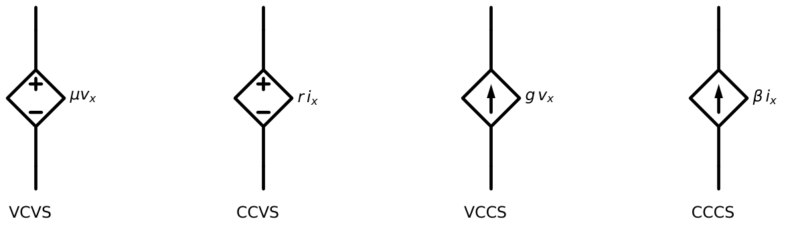
A dependent source is not a source you can “turn off” when applying superposition. Only independent sources are zeroed; dependent sources stay in the circuit and are treated as elements (Chapter 4).
1.5 Ideal and practical voltage/current sources
An ideal voltage source maintains \(v=V_s\) for any current. Its \(v\)–\(i\) characteristic is a vertical line. An ideal current source maintains \(i=I_s\) for any voltage: a horizontal line. Practical sources have internal resistance: a practical voltage source is \(V_s\) in series with \(R_s\); a practical current source is \(I_s\) in parallel with \(R_s\) (Figure 1.2).
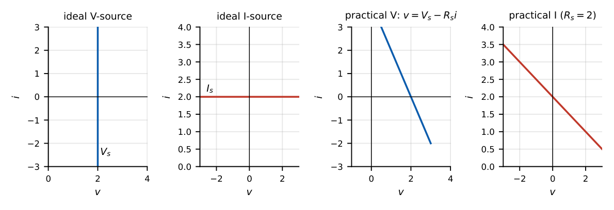
Two different ideal voltage sources in parallel violate KVL, and two different ideal current sources in series violate KCL: these arrangements are not permitted (the problem has no solution). Equal ideal sources may be so connected.
1.6 Source transformation
A practical voltage source \((V_s,R_s)\) is externally equivalent to a practical current source \((I_s,R_s)\) when \(V_s=I_sR_s\). The arrow of the current source points toward the \(+\) terminal of the voltage source.
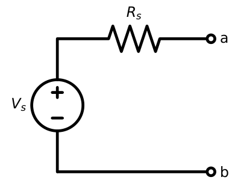
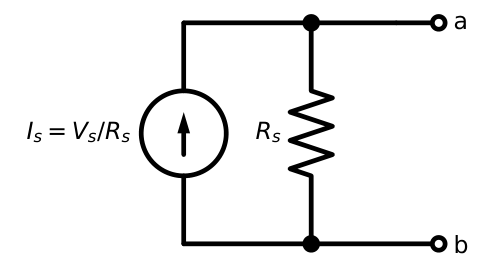
\(V_s=12\) V in series with \(R_s=4\ \Omega\) becomes \(I_s=12/4=3\) A in parallel with \(4\ \Omega\). Conversely \(5\) A with \(2\ \Omega\) becomes \(10\) V in series with \(2\ \Omega\).
The transformation is equivalent only as seen from the external terminals. The power dissipated inside \(R_s\) is different: the open-circuited voltage source dissipates nothing in \(R_s\), while the open-circuited current source dissipates \(I_s^2R_s\) in it. Also, a resistor in parallel with an ideal voltage source, or in series with an ideal current source, does not affect the terminal behaviour and can be dropped when finding other quantities.
1.7 Open circuit and short circuit
An open circuit has \(i=0\) for any \(v\) (a horizontal line on the \(i\)–\(v\) plane; resistance \(\infty\), conductance \(0\)). A short circuit has \(v=0\) for any \(i\) (resistance \(0\)). A useful memory aid: an ideal current source of \(0\) A is an open circuit; an ideal voltage source of \(0\) V is a short circuit. This is exactly what “turning off” a source means.
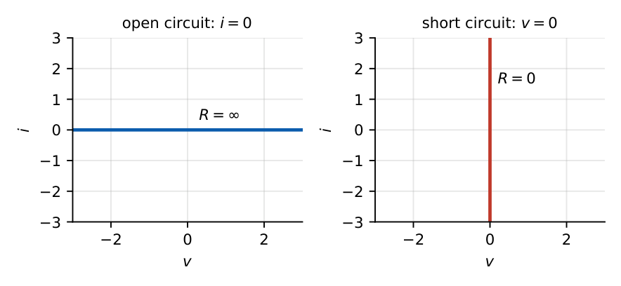
1.8 Series and parallel connections
Elements in series carry the same current; elements in parallel have the same voltage.
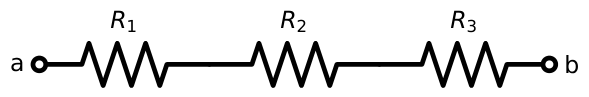
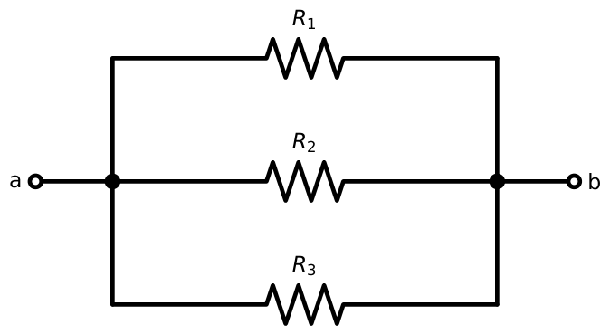
Resistors: series \(R_{eq}=\sum R_k\); parallel \(G_{eq}=\sum G_k\) (with \(G=1/R\)). Two in parallel: \(R_1\parallel R_2=\dfrac{R_1R_2}{R_1+R_2}\).
Capacitors: parallel \(C_{eq}=\sum C_k\); series \(1/C_{eq}=\sum 1/C_k\).
Inductors: series \(L_{eq}=\sum L_k\); parallel \(1/L_{eq}=\sum 1/L_k\) (no mutual coupling).
\(N\) equal resistors \(R\): series \(NR\), parallel \(R/N\).
1.9 Basic circuit laws
Ohm’s law
\(v=iR\) for a linear resistor (with the passive sign convention, Section 1.10).
Kirchhoff’s Current Law (KCL)
The algebraic sum of currents at any node is zero: \(\sum i_k=0\). Equivalently, total current entering equals total current leaving. It expresses conservation of charge.
Kirchhoff’s Voltage Law (KVL)
The algebraic sum of voltages around any closed loop is zero: \(\sum v_k=0\). It expresses conservation of energy.
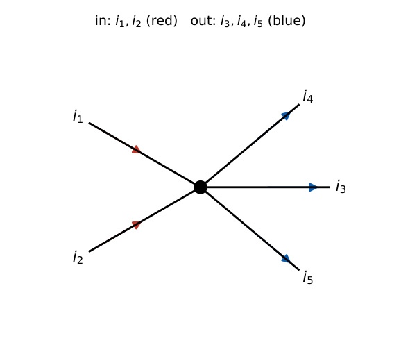
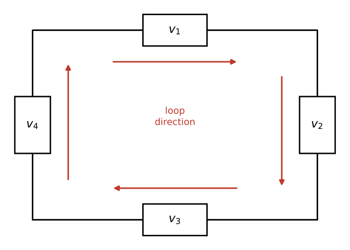
Voltage divider (series): \(v_k=v_s\dfrac{R_k}{R_1+R_2+\cdots}\).
Current divider (parallel, two branches): \(i_1=i_s\dfrac{R_2}{R_1+R_2},\ i_2=i_s\dfrac{R_1}{R_1+R_2}\). The larger current goes through the smaller resistor.
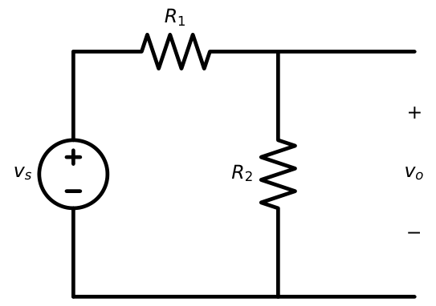
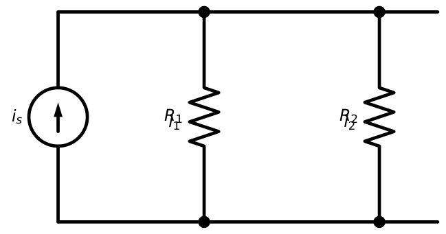
For a connected network with \(b\) branches and \(n\) nodes: the number of independent KCL equations is \(n-1\) and the number of independent KVL equations is \(b-n+1\). Together they give \(b\) equations, which along with the \(b\) branch relations determine the \(2b\) unknowns (branch voltages and currents).
1.10 Sign conventions
Passive sign convention (PSC): choose the reference direction of current into the positive terminal. Then \(p=vi\) is the power absorbed by the element. If \(p>0\) the element absorbs power; if \(p<0\) it delivers power. If the current reference points out of the \(+\) terminal (active convention), \(p=vi\) is the power delivered.
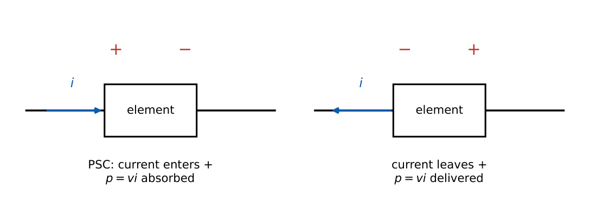
Resistors always have \(v=+iR\) under PSC, so a resistor always absorbs power (never negative). If a resistor appears to deliver power, you have a sign error. A source, however, can either deliver or absorb (a battery being charged absorbs).
1.11 Power calculation and conservation
Tellegen’s theorem: in any network, \(\sum_{k}v_ki_k=0\) over all branches (PSC). Hence power delivered by all sources equals power absorbed by all other elements.
A \(20\) V source drives a \(10\ \Omega\) resistor in series into a node; the node has a \(10\ \Omega\) resistor to ground and a \(1\) A current source injecting into the node.
KCL at the node: \(\dfrac{20-V}{10}+1=\dfrac{V}{10}\Rightarrow V=15\) V.
Source current \(=(20-15)/10=0.5\) A. Power delivered by the \(20\) V source: \(20\times0.5=10\) W.
Power delivered by the current source: \(15\times1=15\) W (current flows out of its \(+\) terminal at \(15\) V).
Absorbed: \(0.5^2\times10=2.5\) W and \(15^2/10=22.5\) W, total \(25\) W \(=10+15\). ✓
1.12 GATE problem-solving techniques
1. Redraw the circuit with nodes labelled; merge points joined by ideal wires.
2. For power questions, find the terminal voltage and current of the element and apply PSC before writing \(p=vi\).
3. An element in parallel with an ideal voltage source (or in series with an ideal current source) never changes the source’s terminal behaviour.
4. Use dividers in a single step instead of writing node equations whenever the topology is a simple ladder.
5. Zero source: voltage source \(\to\) short; current source \(\to\) open.
Find \(R_{ab}\): \(6\ \Omega\parallel3\ \Omega\) in series with \(2\ \Omega\).
\(6\parallel3=\dfrac{18}{9}=2\ \Omega\), then \(2+2=4\ \Omega\).
\(24\) V across \(R_1=8\ \Omega\) in series with \(R_2=4\ \Omega\parallel12\ \Omega\).
\(4\parallel12=3\ \Omega\); total \(=11\ \Omega\); \(I=24/11\) A; voltage across the parallel pair \(=24\times3/11=6.545\) V; current through the \(12\ \Omega\): \(6.545/12=0.545\) A.
Q1. For a planar circuit with \(b\) branches and \(n\) nodes, the number of independent KVL equations is
(A) \(n-1\) (B) \(b-n+1\) (C) \(b-n\) (D) \(b\).
Q2. An element has terminal voltage \(v=6\) V, and a \(2\) A current leaves its positive terminal. The element (A) absorbs \(12\) W (B) delivers \(12\) W (C) absorbs \(3\) W (D) delivers \(3\) W.
Q3. A practical current source of \(2\) A with \(5\ \Omega\) in parallel is transformed to a voltage source. The result is (A) \(10\) V, \(5\ \Omega\) series (B) \(2.5\) V, \(5\ \Omega\) series (C) \(10\) V, \(0.2\ \Omega\) series (D) \(7\) V, \(5\ \Omega\) series.
Answers: Q1 (B). Q2 (B): current out of \(+\) terminal is the active convention, so \(vi=12\) W is delivered. Q3 (A): \(V=IR=10\) V, \(R_s\) unchanged.
Q4. In the power-balance example of Section 1.11 the current source is changed to \(2\) A into the node. The power delivered by the \(20\) V source is (A) \(0\) (B) \(10\) W (C) \(20\) W (D) \(-20\) W.
Q5. \(N\) identical resistors \(R\) are connected first all in series and then all in parallel. The ratio of the two equivalent resistances is (A) \(N\) (B) \(N^2\) (C) \(1/N\) (D) \(1/N^2\).
Answers: Q4: \((20-V)/10+2=V/10\Rightarrow V=20\) V, source current \(0\), power \(0\) (A). Q5: \(NR/(R/N)=N^2\) (B).
Q6. \(12\) A enters a parallel pair \(12\ \Omega\) and \(4\ \Omega\). The current in the \(4\ \Omega\) branch is A.
Q7. \(30\) V is applied across \(5\ \Omega\) and \(10\ \Omega\) in series. The power absorbed by the \(5\ \Omega\) resistor is W.
Answers: Q6: \(12\times12/(12+4)=9\) A. Q7: \(I=30/15=2\) A, \(P=4\times5=20\) W.
(i) Using \(p=vi\) with the wrong sign convention. (ii) Treating a dependent source as independent when zeroing. (iii) Forgetting that current-divider fractions use the opposite resistor in the numerator. (iv) Forgetting that ideal wires short out resistors connected across them. (v) Assuming a source always delivers power.
T1. Which statement is true? (A) An inductor’s voltage cannot jump. (B) A capacitor’s voltage cannot jump. (C) An inductor’s current can jump if \(L\) is small. (D) A resistor stores energy.
T2. A \(9\) V source with \(3\ \Omega\) internal resistance is connected to a \(6\ \Omega\) load. Load power = ?
T3. True or false: the current source \(I_s\) in parallel with \(R\), when open-circuited, dissipates no power.
Answers: T1 (B). T2: \(I=9/9=1\) A, \(P=6\) W. T3: False; it dissipates \(I_s^2R\) in \(R\).
- \(i=dq/dt\), \(v=dw/dq\), \(p=vi\), \(w=\int p\,dt\). PSC: current into \(+\) \(\Rightarrow\) \(p=vi\) absorbed.
- R: \(v=Ri\). L: \(v=Ldi/dt\) (i continuous). C: \(i=Cdv/dt\) (v continuous).
- KCL: \(\sum i=0\) at nodes. KVL: \(\sum v=0\) around loops. Independent: \(n-1\) KCL, \(b-n+1\) KVL.
- Series: same \(i\), \(R\) adds. Parallel: same \(v\), \(G\) adds. Dividers: \(v_k=v_sR_k/\sum R\), \(i_1=i_sR_2/(R_1+R_2)\).
- Source transformation: \(V_s=I_sR_s\), arrow points to \(+\).
- Zero a source: voltage \(\to\) short, current \(\to\) open. Dependent sources are never zeroed.
- Tellegen: \(\sum vi=0\) (power delivered \(=\) power absorbed).